Battery Electric Vehicle Model
This document gives you an overview of the different components and subsystems of the battery electric vehicle (BEV) plant model. The plant model is a coupled electro-thermal model that you can use to simulate a front-wheel drive (FWD) or an all-wheel drive (AWD) powertrain.
Contents
Model Overview

This model represents an electric vehicle platform with two electric motors, one in front (the main drive) and one in rear (for boost and all-wheel drive modes). In this example, you add simple heating, ventilation, and air conditioning (HVAC) and auxiliary loads for better estimation of the load on the battery due to heating and cooling.% The coolant circuit maintains the temperature of the electric motors and the battery within an operable range. An electric heater, in the coolant circuit, increases the battery temperature during startup in low temperature conditions. In this example, you have two fidelity of the vehicle model, an abstract vehicle model and a eltro-thermal model. You can select the fidelity from the model canvas hyperlinks.

Battery Subsystem
The Battery subsystem models the battery pack, a table-based battery, and a battery management system (BMS).
Battery Pack
In this example, you model the battery pack using Simscape Battery™ and the Pack subsystem using the Battery Pack Builder.
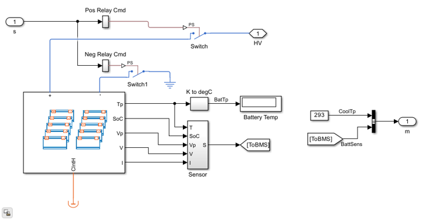The battery comprises a battery pack of 400V because this voltage is typically used for electric vehicles. Since a single cell cannot provide such a high voltage, you connect multiple cells in series and parallel to create the desired battery pack. The battery pack in this example comprises 10 modules, each with 11 series-connected parallel sets (p-sets). Each p-set comprises three cells in series. All modules are connected in series to form a pack of 330 cells. The pack in the example is of 400V , 40KW i.e. 100Ah battery pack. To create the module used in this battery pack, see example Build Model of Battery Module With Thermal Effects example.

Table based battery
The table based battery model tabulates battery characteristics as functions of state of charge (SOC) and temperature and scales the characteristics upto the capacity of the pack. For quick deployment the Battery block has a selection of predefined battery characteristics.
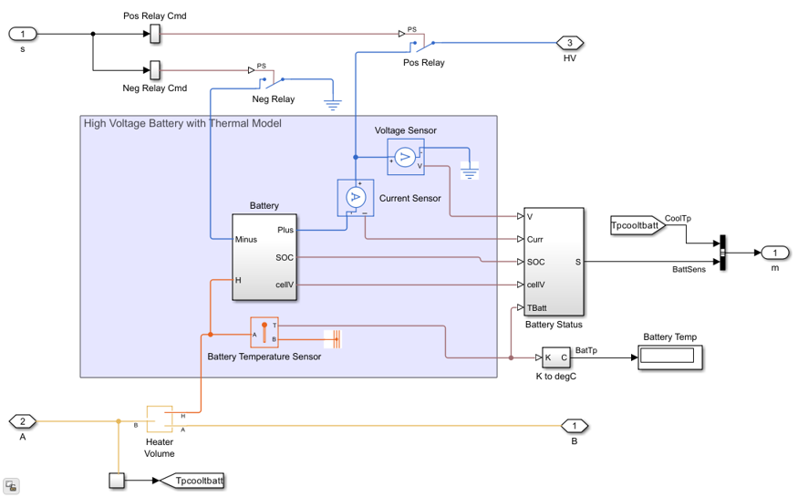Battery Management System
The battery management system (BMS) manages all the battery operations and keeps the battery within operational limits. The BMS maintains the current, voltage, and temperature of the pack within safe limits during the charging and discharging operations. In this example, the BMS controls the circuit breakers to protect the battery pack based on the pack sensor data and on estimated parameters such as the state of charge (SOC) and the current limits for charging and discharging.
Open Battery Management Subsystem
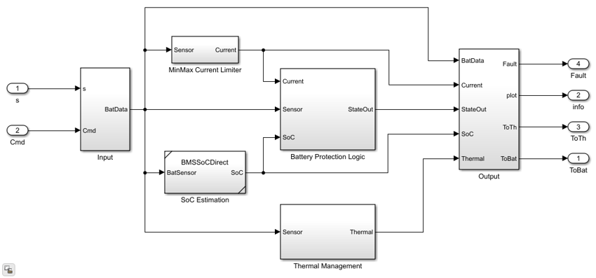The BMS in this example comprises four different components: SOC estimation, MinMax Current Limiter, Thermal Management, and Battery Protection Logic.
Mode Control Dashboard
In an electric vehicle, you can control the charging and discharging operations of the battery. To start the car, the key is turned which connects the battery circuit breakers and connects the battery to the system of the car. While driving, the battery is in discharge mode. When you connect the car to a charger, the battery is in charging mode. In a car, the discharging and charging modes are mutually exclusive. This example emulates this scenario by implementing a charging control dashboard in the model, called Battery Command. This dashboard comprises a rotary switch for manual operations, an on-off switch for automatic operations, and indication lamps.

Use the rotary switch to choose between the charging and discharging modes manually. The position of the rotary switch affects the battery mode: Off — The battery is disconnected.
- Bat — The battery is connected.
- Chg — The battery is charging.
- Dchg — The battery is discharging.
Use the on-off switch to switch between modes automatically by setting the switch to On and by specifying the BatCmd variable. When the BatCmd variable is equal to:
- 0 — The battery is disconnected.
- 1 — The battery is connected.
- 2 — The battery is charging.
- 3 — The battery is discharging.
The indication lamps show which mode the battery is currently operating in. When the lamps are red, the specific mode is off. When the lamps are green, the specific mode is on. Use the all wheel drive (AWD) switch to activate or deactivate AWD mode manually. The lamp on the switch shows the status of AWD mode:
- On — AWD drive mode is active, torque is split between rear and front motor based on torque demand and split factor.
- Off — AWD drive mode is inactive, only the front motor will be active.
Electric Drivetrain (E-Axle)
The Front Motor (EM1) and Rear Motor (EM2) blocks model the electric drive for this system. The model has two electric motors, one in the front connected to the front axle and a second electric motor connected to the rear axle.
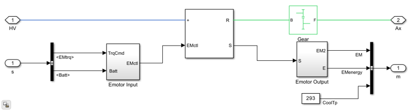The electric motors are connected to the battery high voltage bus. The Emotors are connected or disconnected from the battery based on relay signal from the BMS which is connected to the fault port of the Motor & Drive block. The plant model tracks a torque demand generated by the vehicle controller in close loop to reach a speed setpoint. You can load tabulated data of the speed and time to track a speed profile. This tabulated profile can be a standard drive cycle in the Drive Cycle Source block or a real drive cycle data from test runs. Output from the Emotor block goes to a gearbox and then to the wheel. The signals are passed to other components via Simscape Bus.
The electric motor loss map is generated using the PMSM test bench, as described in PMSM Thermal Test Bench for Battery Electric Vehicle.
Vehicle Wheels and Braking
The vehicle model i a two axle system with two tires on each axle. Disc brakes are modeled in rear wheel for mechanical braking, also braking force comes through the emotor for the front. The weight of the vehicle body is the combined weight of the car and the battery.
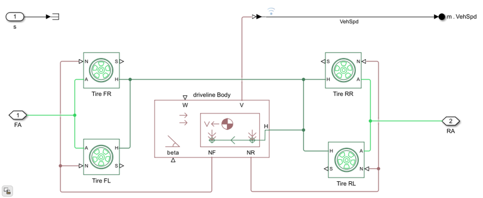Vehicle Control
Driver control generates torque demand for the Emotor to track a vehicle speed setpoint in closed loop. The Drive Cycle Source block is used for speed setpoint data and speed output from Emotor plant model is feedback to the controller. Generated torque demand is limited by max threshold for charging and discharging torque, which depends on the cell temperature and open circuit voltage of cell. Break force is calculated for the disc brake for any extra torque which is not regenrated by the emotor.
Open Vehicle Control Subsystem
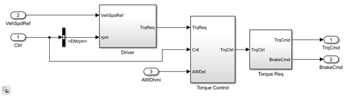Vehicle Thermal Management
The temperature of the components in a vehicle effects both the efficiency and the safety of the vehicle. The battery for example, has an optimal range of temperature in which the battery performance is most efficient. Extreme temperatures permanently damage the battery. You design a thermal coolant circuit to extract the extra heat from these critical components . Ethylene glycol is the coolant fluid circulating through the component. The thermal circuit has two pumps, one for battery cooling and one for Emotor cooling. Valves control the direction of flow in the coolant loop. Air comes through the front grill over the radiator because of vehicle motion and assisted by a fan, it dumps the heat absorbed from the components to the environment. There are two modes for the coolant flow:
- Parallel mode - the Emotor coolant loop and battery coolant loop are in parallel.
- Serial mode - the coolant flows in series through all the components.

The chiller extracts a fixed amount of heat from the coolant.
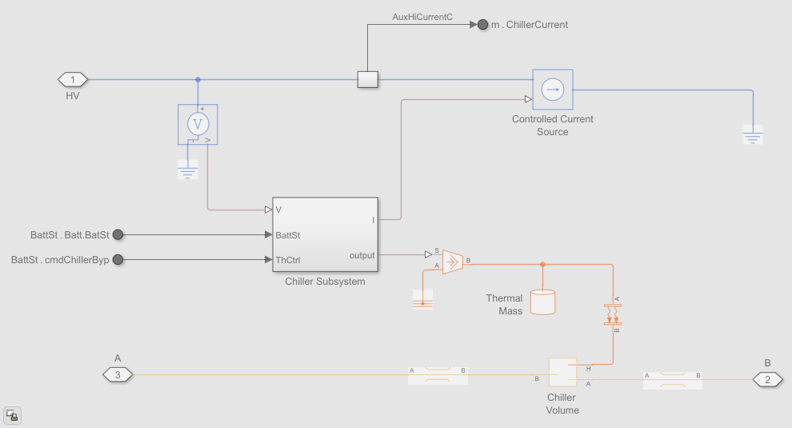The heater adds a fixed amount of heat to the coolant in the circuit.
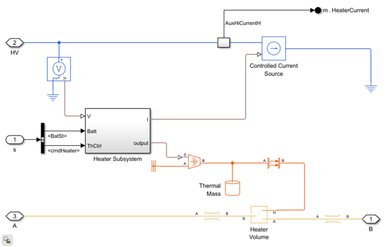The pump and the valves are actuated based on the coolant temperature and whether battery requires cooling or heating. When the temperature of the coolant in the Emotor is low, then the coolant bypasses the radiator and keeps recirculating to increase the temperature. If the temperature is above a threshold value, coolant passes through the radiator. Similarly, when the battery temperature is above a threshold value the coolant passes through the chiller to cool the battery quickly. A positive temperature coefficient (PTC) heater increases the temperature of the battery in low ambient temperature conditions. Once the battery temperature is high, the heater is switched off as the battery can sustain the temperature.
Open Thermal Control Subsystem
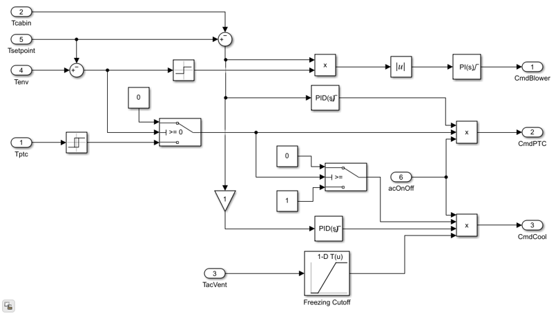Cabin HVAC
Abstract Refrigeration
The battery powers the cooling or heating of the cabin. In near zero ambient temperature conditions, heating the cabin consumes 10-15% of the battery capacity. The PTC heater, cooler, and the blower are in loop. The blower circulates the air from the vent through the cabin to heat or cool the cabin.
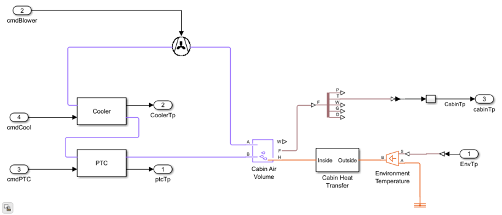The cabin loses heat to the environment through the vehicle door, windows, and roof.
The Scenarios subsystem sets the cabin setpoint temperature and the AC on/off control. The HVAC controller modulates the air flow in the cabin through the vent. The heater and cooler draw the required power from the main battery high voltage bus.
Lumped Thermal Refrigeration
When the cabin setpoint temperature is lower than the environmental temperature, the lumped thermal refrigeration subsystem handles the cabin latent and sensible heat loads. To manage the CO2 concentration in cabin, the Cabin Air subsystem vents out a fixed percentage of cabin air, while maintaining the cabin pressure. The compressor draws the power required to run the Refrigeration subsystem from the battery pack.
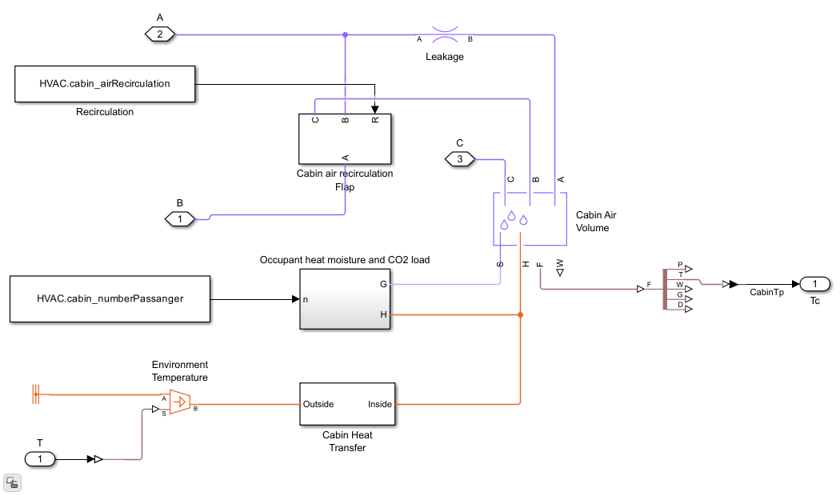